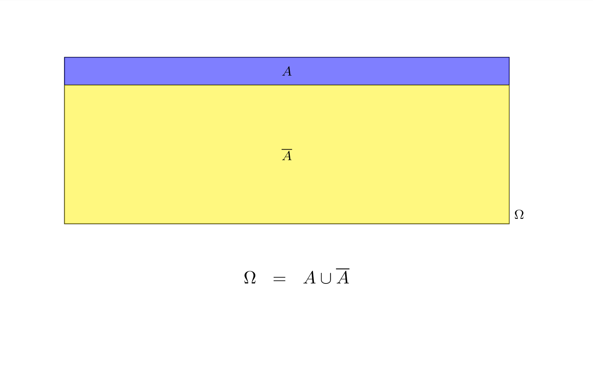
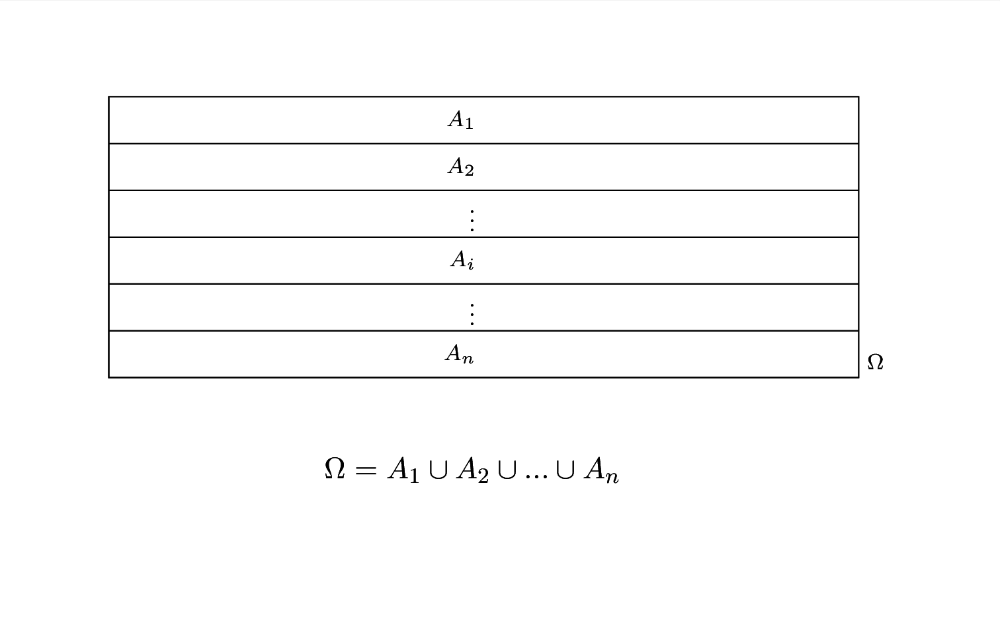
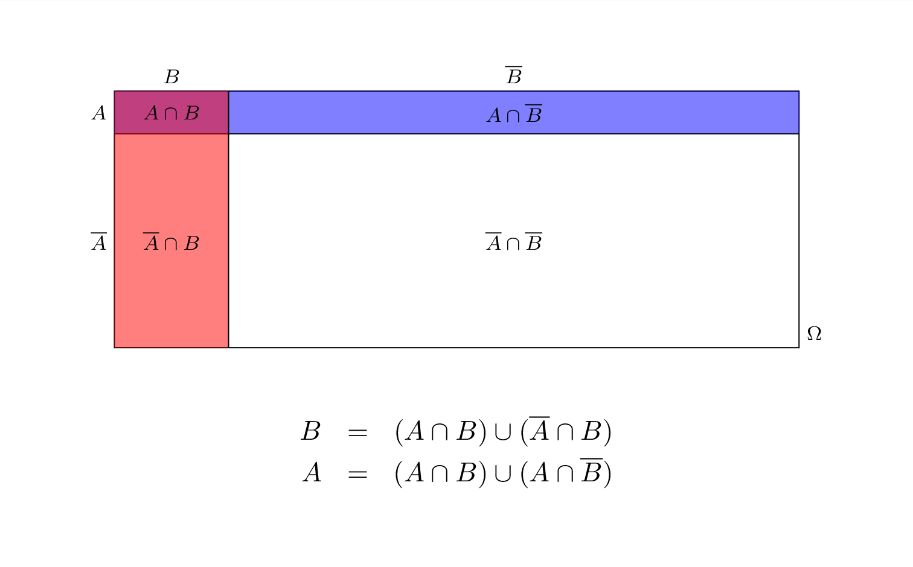
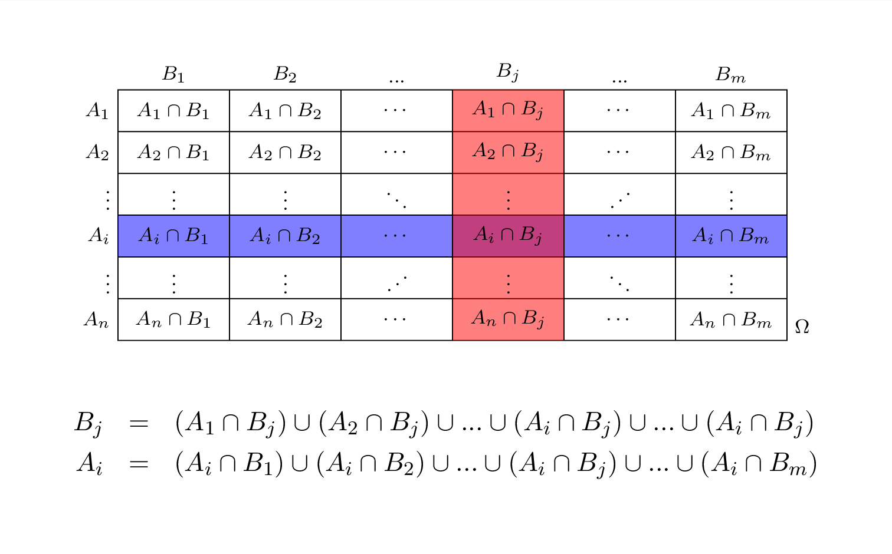

Capitolo 5 Cenni di Teoria della probabilità
5.1 Concetti di base
La definizione più moderna che possiamo dare è che
La probabilità è una misura dell’incertezza
che un osservatore razionale esprime sull’accadibilità di un evento.
Questa definizione consente di ampliare i campi di applicazione della teoria della probabilità oltre il mero calcolo dei giochi d’azzardo. Ma per arrivare a questa definizione molto ampia, matematici, scienziati e filosofi discutono di caso, caos, disordine, frequenza, probabilità, possibilità, verosimiglianza, ecc. da diversi secoli. La storia della filosofia e del calcolo della probabilità è affascinate e complessa ed esula dagli obiettivi di questi appunti. Rimando ai più curiosi il libro di Costantini e Geymonat:
D. Costantini e L. Geymonat, Filosofia della probabilità, Feltrinelli, Milano 1982.
5.1.1 Eventi
Un evento \(E\) è un fatto (potenzialmente verificabile), espresso nel linguaggio comune, che non sappiamo se è vero o se è falso:
- uscirà 6 dal lancio di un dado (perfetto).
- uscirà testa dal lancio di una moneta non regolare.
- Domani pioverà.
- l’indice Dow Jones tra un’ora quoterà 35 000.
Dicendo che il fatto deve essere potenzialmente verificabile escludiamo tutti quegli eventi che sono fuori dalla portata dei nostri sensi. Ovvero speculare sull’esistenza di Dio o della vita dopo la morte o di scenari ipotetici nel passato non è compito della probabilità.
5.1.2 Algebra degli eventi
Usiamo gli operatori dell’insiemistica per combinare gli eventi tra di loro, trasformando le operazioni sintattiche del linguaggio comune in unioni ed intersezioni di eventi.
Definizione 5.1 (Unione tra Eventi) Siano \(A\) e \(B\) due eventi, l’espressione \[ A\cup B \] è vera se almeno uno dei due è vero.
Esempio 5.1 \[\begin{eqnarray*} A&=& \text{Domani pioverà}\\ B&=& \text{Domani ci sarà traffico} \end{eqnarray*}\] \[ A\cup B\qquad\text{sarà vera se domani pioverà }\textbf{o}\text{ ci sarà traffico }\textbf{o}\text{ ci sarà pioggia e traffico.} \]
Definizione 5.2 (Intersezione tra Eventi) Siano \(A\) e \(B\) due eventi, l’espressione \[ A\cap B\qquad\text{è vera se è vero $A$ }\textbf{e}\text{ è vero $B$.} \]
Esempio 5.2 \[\begin{eqnarray*} A&=& \text{Domani pioverà}\\ B&=& \text{Domani ci sarà traffico} \end{eqnarray*}\] \[ A\cap B\qquad\text{sarà vera se domani pioverà }\textbf{e}\text{ ci sarà traffico.} \]
Definizione 5.3 (Evento Complementare) Sia \(A\) un evento, si definisce \(\bar A\) l’evento complementare di \(A\)
Esempio 5.3 \[\begin{eqnarray*} A&=& \text{Domani pioverà}\\ \bar A&=& \text{Domani }\textbf{non}\text{ pioverà} \end{eqnarray*}\]
\[ \text{domani}\textbf{ non}\text{ pioverà} \]
Definizione 5.4 (Evento Certo) Sia \(A\) un evento, si definisce l’evento certo \(\Omega\) l’evento: \[\begin{eqnarray*} \Omega &=& A\cup\bar A \end{eqnarray*}\]
Esempio 5.4 \[\begin{eqnarray*} A&=& \text{Domani pioverà}\\ \bar A&=& \text{Domani }\textbf{non}\text{ pioverà}\\ \Omega &=& \text{Domani o pioverà o non pioverà} \end{eqnarray*}\]
Definizione 5.5 (Evento Impossibile) Sia \(A\) un evento, si definisce l’evento certo \(\emptyset\) l’evento: \[\begin{eqnarray*} \emptyset &=& A\cap\bar A \end{eqnarray*}\]
Esempio 5.5 \[\begin{eqnarray*} A&=& \text{Domani pioverà}\\ \bar A&=& \text{Domani }\textbf{non}\text{ pioverà}\\ \emptyset &=& \text{Domani pioverà \bf e non pioverà} \end{eqnarray*}\]
5.1.3 Operazioni su insieme
Gli operatori Unione \(\cup\) e Intersezione \(\cap\) si comportano sugli insiemi come somme \(+\) e moltiplicazione \(\times\) si comportano sui numeri. In particolare \[\begin{align*} A\cup B &= B\cup A ,&&\text{prorietà commutativa}\\ A\cap B &= B\cap A ,&&\text{prorietà commutativa}\\ (A\cup B)\cup C &= A\cup (B\cup C), &&\text{prorietà associativa}\\ (A\cap B)\cap C &= A\cap (B\cap C), &&\text{prorietà associativa}\\ (A\cup B)\cap C &= (A\cap C)\cup(B\cap C), &&\text{prorietà distributiva}\\ A\cup B\cap C &= A\cup (B\cap C), &&\text{l'intersezione ha priorità sull'unione...}\\ (A\cup B)\cap C &\ne A\cup (B\cap C), &&\text{a meno di opportune parentesi} \end{align*}\]
5.1.4 La probabilità è una funzione
La probabilità assegna ad ogni evento il grado di credibilità \[ P(A) \] indica la probabilità che l’evento \(A\) sia vero. In particolare \[ P(A)=P(\Omega)=1 \] se \(A\) è un evento certo \[ P(A)=P(\emptyset)=0 \]
se \(A\) è un evento impossibile e in generale
\[ 0\le P(A)\le 1 \]
5.1.5 Definizioni di probabilità
- approccio classico (Laplace)
- approccio frequentista
- approccio soggettivista
Definizione 5.6 (Approccio Classico (Laplace)) la probabilità è il rapporto tra il numero dei casi favorevoli e il numero dei casi possibili, posto che gli eventi siano tutti equiprobabili.
\[ P(A)=\frac{\#(\text{casi favorevoli ad $A$} )}{\#(\text{casi totali} )} \]
Esempio 5.6 Un’urna contiene 5 sfere Rosse, 3 sfere Blu e 2 Nere. La probabilità dell’evento \[ R =\text{Estraggo una Rossa} \] è data da \[ P(R)=\frac{5}{5+3+2}=0.5 \]
Definizione 5.7 (Approccio Frequentista) Postulato empirico del caso.
In un gruppo di prove ripetute più volte nelle stesse condizioni, ciascuno degli eventi possibili si presenta con una frequenza relativa che tende alla probabilità all’aumentare del numero di prove; ossia
\[ P(A)=\frac{n_A}{n}+\epsilon_n \quad\mbox{dove}\quad \epsilon_{n}\to 0 \quad\mbox{per}\quad n\to\infty . \]
Esempio 5.7 Viene lanciata 200 vole una moneta (che non sappiamo se è bilanciata oppure no), Si è osservato che 136 su 200 lanci sono TESTA La probabilità dell’evento \[ T =\text{“Esce Testa''} \] è data da \[ P(T)\approx\frac{136}{200}=0.68 \]
Viene lanciata 2000 vole una moneta (che non sappiamo se è bilanciata oppure no), Si è osservato che 1360 su 2000 lanci sono TESTA La probabilità dell’evento \[ T =\text{“Esce Testa''} \] è data da \[ P(T)\approx\frac{1360}{2000}=0.68 \]
Ma saremo più sicuri che avendo lanciato solo 200 volte.
Definizione 5.8 (Approccio Soggettivista)
L’approccio soggettivista alla probabilità, sviluppato da Bruno de Finetti, si differenzia dagli approcci classico e frequentista. Secondo de Finetti, la probabilità non è una proprietà intrinseca degli eventi, ma rappresenta il grado di credenza o fiducia che un individuo assegna all’accadimento di un certo evento. In questo contesto, la probabilità è personale e varia da soggetto a soggetto, riflettendo l’informazione, l’esperienza e il giudizio personale.
La probabilità soggettiva si esprime attraverso le scommesse. Per esempio, dire che un evento ha probabilità del 60% equivale a dire che si è disposti a scommettere con un rapporto di 3:2 in favore dell’evento, sia come scommettitore che come allibratore. Questa visione mette in luce come le probabilità siano strettamente legate alle decisioni e alle aspettative personali, e come possano essere aggiornate in base a nuove informazioni (teoria Bayesiana).
L’approccio soggettivistico è particolarmente utile in situazioni dove i dati sono limitati o dove è difficile definire una frequenza a lungo termine, come nelle previsioni meteorologiche o nelle valutazioni di rischio in ambiti finanziari o assicurativi.
5.2 Teoria di Kolmogorov
La teoria di Kolmogorov è una teoria matematica, estremamente formalizzata, che non si preoccupa di assegnare le probabilità agli eventi ma alle regole formali per assegnarla senza cadere in contraddizioni. La teoria muove da 3 assiomi che andremo ad elencare tra poco, di estremo buon senso e muove per definizioni e teoremi verso strumenti di grande aiuto nella soluzione di problemi concreti.
Definizione 5.9 Sia \(\Omega\) l’evento certo, Si definisce uno spazio probabilizzato \(\{\Omega,\mathscr{A},P\}\), dove \(\mathscr{A}\) è un’algebra costruita su \(\Omega\) e \(P\) è una misura di probabilità.
5.2.1 Algebra degli Eventi
L’algebra degli eventi è una particolare collezione di sottoinsiemi di \(\Omega\) che siamo interessati a probabilizzare. È uno spazio astratto che etichetta tutte le i possibili eventi che possiamo costruire a partire da alcuni eventi di partenza. Un’algebra degli eventi viene solitamente indicata con una lettera calligrafica corsiva. In queste pagine useremo il carattere tipografico \(\mathscr{A}\).
\(\mathscr{A}\): un insieme di sotto insiemi di \(\Omega\), che contiene l’insieme vuoto, tutto \(\Omega\) ed è chiuso rispetto alle unioni e alle intersezioni e al passaggio al complementare: se \(A\in\mathscr{A}\) e \(B\in\mathscr{A}\) allora
\[\begin{eqnarray*} A\cup B &\in& \mathscr{A}\\ A\cap B &\in& \mathscr{A}\\ \bar A &\in& \mathscr{A} \end{eqnarray*}\]
Esempio 5.8 Per illustrare l’idea di un’algebra degli eventi con un esempio finito, consideriamo un insieme \(\Omega\) che rappresenta lo spazio campionario di un semplice lancio di due monete. \(\Omega\) è dato da tutte le possibili combinazioni dei risultati di due lanci di moneta: \(\Omega = {\text{(T, T)}, \text{(T, C)}, \text{(C, T)}, \text{(C, C)}}\).
Certo, consideriamo ora il lancio di due monete. In questo caso, lo spazio campionario \(\Omega\) è dato da tutte le possibili combinazioni dei risultati di due lanci di moneta: \(\Omega = \{\text{(T, T)}, \text{(T, C)}, \text{(C, T)}, \text{(C, C)}\}\).
Costruiamo un’algebra degli eventi \(\mathscr{A}\) per questo esperimento. Questa algebra potrebbe includere i seguenti sottoinsiemi di \(\Omega\):
- L’insieme vuoto \(\emptyset\), che rappresenta l’evento impossibile.
- L’intero insieme \(\Omega\), che rappresenta l’evento certo.
- Singoli elementi come \(\{\text{(T, T)}\}\), \(\{\text{(T, C)}\}\), \(\{\text{(C, T)}\}\), \(\{\text{(C, C)}\}\), che rappresentano gli eventi di ottenere specifiche combinazioni.
- Combinazioni di questi eventi, come \(\{\text{(T, T)}, \text{(T, C)}\}\), che rappresenta l’evento in cui la prima moneta mostra T, indipendentemente dal risultato della seconda moneta.
Questi sottoinsiemi rispettano le proprietà di un’algebra degli eventi:
- Contengono l’insieme vuoto e l’intero insieme \(\Omega\).
- Sono chiusi rispetto alle operazioni di unione, intersezione e passaggio al complementare. Ad esempio:
- Unione: \(\{\text{(T, T)}\} \cup \{\text{(C, C)}\} = \{\text{(T, T)}, \text{(C, C)}\} \in \mathscr{A}\).
- Intersezione: \(\{\text{(T, T)}, \text{(T, C)}\} \cap \{\text{(T, T)}, \text{(C, T)}\} = \{\text{(T, T)}\} \in \mathscr{A}\).
- Complementare: \(\overline{\{\text{(T, T)}\}} = \{\text{(T, C)}, \text{(C, T)}, \text{(C, C)}\} \in \mathscr{A}\).
In questo modo, l’algebra degli eventi \(\mathscr{A}\) cattura tutte le possibili combinazioni di eventi che possono verificarsi nel contesto di due lanci di moneta.
In definitiva
\[\begin{eqnarray*} \mathscr{A} &=& \{\emptyset, \\ && \text{(T, T)}, \text{(T, C)}, \text{(C, T)}, \text{(C, C)} \\ && \{\text{(T, T)}\cup \text{(T, C)}\}, \{\text{(T, T)}\cup \text{(C, T)}\} , \{\text{(T, T)}\cup \text{(C, C)}\},\\ && \{\text{(T, C)}\cup \text{(C, T)}\}, \{\text{(T, C)}\cup \text{(C, C)}\} , \{\text{(C, T)}\cup \text{(C, C)}\},\\ && \{\text{(T, T)}\cup \text{(T, C)}\cup\text{(C,T)}\}, \{\text{(T, T)}\cup \text{(T, C)}\cup \text{(C, C)}\},\\ && \{\text{(T, T)}\cup \text{(C, T)}\cup\text{(C,C)}\}, \{\text{(T, C)}\cup \text{(C, T)}\cup \text{(C, C)}\},\\ && \Omega\} \end{eqnarray*}\]
5.2.2 Assiomi di Kolmogorov
La probabilità \(P\) è una funzione che trasforma ogni evento \(A\) di \(\mathscr{A}\) in un numero reale \[P:\mathscr{A}\to\mathbb{R},~~\forall A\in\mathscr{A}\]
Tale che
\(~~~~i.\phantom{i}\phantom{i}~\) \(P(A)\ge 0,~\forall A\in\mathscr{A}\)
\(~~~~ii.\phantom{i}~\) \(P(\Omega)=1\)
\(~~~~iii.~\) \(\forall A,B\in\mathscr{A}:A\cap B=\emptyset, P(A\cup B)=P(A)+P(B)\)
La forza della teoria consiste nel ricavare tutti i risultati partendo da questi 3 assiomi.
5.2.3 Proprietà di \(P\)
Dagli assiomi precedenti possiamo ricavare diverse proprietà interessanti di \(P\) che non sono scritte in modo esplicito negli assiomi ma si ricavano per dimostrazione.
Proprietà 5.1 (Proprietà Principali di $P$) Tra le tante enunciamo le più immediate ed utili:
\(0\le P(A) \le 1,~\forall A\in\mathscr{A}\)
\(P(\emptyset)=0\)
\(P(A)=1-P(\bar A)\)
\(P(A\cap B)=P(A)-P(A\cap \bar B)\)
\(P(A\cup B)=P(A)+P(B)-P(A\cap B)\)
Dimostrazione. Nell’ordine
Dall’assioma i sappiamo che \[P(A)>0\] e dall’assioma ii che \[P(\Omega)=1\] Siccome \[A\cup\bar A=\Omega\] in virtù dell’assioma iii otteniamo \[\begin{eqnarray*} P(A\cup\bar A)&=& P(\Omega)\\ P(A)+P(\bar A)&=& 1\\ P(A)&\le& 1 \end{eqnarray*}\]
Siccome il complementare di \(\Omega\) è l’insieme vuoto \[ \bar\Omega=\emptyset \] dalla 1. sappiamo che la probabilità è compresa tra zero ed 1 e quindi \[\begin{eqnarray*} P(\Omega\cup\emptyset)&=& P(\Omega)\\ P(\Omega)+P(\emptyset)&=& 1\\ P(\emptyset)= 0 \end{eqnarray*}\]
Siccome \[A\cup\bar A=\Omega\] in virtù dell’assioma iii otteniamo \[\begin{eqnarray*} P(A\cup\bar A)&=& P(\Omega)\\ P(A)+P(\bar A)&=& 1\\ P(A)&=& 1-P(\bar A) \end{eqnarray*}\]
Osserviamo che \[A=(A\cap B)\cup(A\cap\bar B)\] e quindi \[\begin{eqnarray*} P(A)&=& P((A\cap B)\cup(A\cap\bar B))\\ P(A)&=& P(A\cap B)+P(A\cap\bar B)\\ P(A\cap B)&=& P(\bar A)-P(A\cap\bar B)\\ P(A\cap\bar B)&=& P(\bar A)-P(A\cap B) \end{eqnarray*}\]
Notiamo che \[A\cup B=(A\cap\bar B)\cup(B\cap\bar A)\cup(A\cap B)\] cioè \(A\cup B\) si può riscrivere come l’unione di tre eventi disgiunti \((A\cap\bar B)\), \((B\cap\bar A)\) e \(\cup(A\cap B)\). e quindi \[\begin{eqnarray*} P(A\cup B)&=&P((A\cap\bar B)\cup(B\cap\bar A)\cup(A\cap B))\\ P(A\cup B)&=&P(A\cap\bar B)+P(B\cap\bar A)+P(A\cap B)\\ P(A\cup B)&=&P(A)-P(A\cap B)+P(B)-P(B\cap A)+P(A\cap B)\\ P(A\cup B)&=&P(A)+P(B)-P(B\cap A) \end{eqnarray*}\] in figura 5.1 una rappresentazione grafica.
Figura 5.1 Regola di De Morgan per due insiemi: la probabilità dell’unione è la somma della probilità di tre eventi disgiunti
Definizione 5.10 (Eventi Incompatibili) \(A\) e \(B\) si dicono incompatibili se e solo se \[A\cap B = \emptyset\] in figura 5.2 una rappresentazione grafica.
Figura 5.2 Regola di De Morgan per due insiemi: la probabilità dell’unione è la somma della probaiblità di tre eventi disgiunti
Esempio 5.9 Un’urna ha 8 palline bianche numerate da 1 a 8 e 5 palline nere numerate da 5 a 9. L’evento \[A=\text{esce un numero inferiore a 4},\] e l’evento \[B=\text{esce una pallina nera},\] Sono chiaramente incompatibili.
5.3 Probabilità Condizionata
La probabilità di un evento \(A\) condizionata ad un evento \(B\) risponde alla domanda
Se \(B\) fosse vero, con quale probabilità sarebbe vero \(A\)?
Definizione 5.11 (Probabilità Condizionata) Si definisce probabilità di \(A\) condizionata a \(B\) (probabilità di \(A\) dato \(B\)) la quantità \[ P(A|B)=\frac{P(A\cap B)}{P(B)} \]
Esempio 5.10 Un’urna ha 8 palline bianche numerate da 1 a 8 e 5 palline nere numerate da 5 a 9. Si considerino l’evento \[A=\text{esce un numero maggiore o uguale a 6},\] e l’evento \[B=\text{esce una pallina nera}.\]
Ovviamente \[\begin{eqnarray*} P(A)&=& \frac{7}{13}=0.5385\\ P(B)&=& \frac{5}{13}=0.3846\\ P(A\cap B)&=& \frac{4}{13}=0.3077 \end{eqnarray*}\] e infine \[\begin{eqnarray*} P(A|B)&=& \frac{P(A\cap B)}{P(B)}\\ &=& \frac{\frac{4}{13}}{\frac{5}{13}}=0.8\\ P(B|A)&=& \frac{P(A\cap B)}{P(A)}\\ &=& \frac{\frac{4}{13}}{\frac{7}{13}}=0.5714 \end{eqnarray*}\]
La probabilità condizionata ci consente di esprimere la probabilità dell’intersezione come prodotto di probabilità condizionate. Infatti in alcune circostanze è più facile ricavare una probabilità condizionata invece della probabilità dell’intersezione. La Chain Rule è il modo di esprimere probabilità dell’intersezione come prodotto di condizionate.
Versione a coppie \[P(A\cap B)=P(A)P(B|A)=P(B)P(A|B)\]
la dimostrazione deriva direttamente dalla definizione 5.11.
Versione a triple \[P(A\cap B\cap C)=P(A)P(B|A)P(C|A\cap B)\]
Per mostrare la versione a triple basta analizzare prima l’intersezione di due eventi \(A\) e \(B\cap C\), ovvero
\[\begin{eqnarray*} P(A\cap B\cap C)&=& P(A\cap (B\cap C))\\ &=& P(A)P(B\cap C|A)\\ &=& P(A)P(B|A)P(C|A\cap B) \end{eqnarray*}\]
Versione generale \[P(A_1\cap A_2\cap A_3 \cap...\cap A_n)=P(A_1)P(A_2|A_1)P(A_3|_1\cap A_2)...P(A_{n}|A_1\cap A_2\cap ...\cap A_{n-1})\]
Per mostrare la versione generale basta iterare il ragionamento in triplette.
5.3.1 Indipendenza tra Eventi
L’indipendenza è un concetto estremamente importante in probabilità. Se due eventi \(A\) e \(B\) sono indipendenti significa che l’accadere o meno dell’uno non altera in alcun modo la probabilità dell’altro.
Definizione 5.12 (Indipendenza tra Eventi) Due eventi \(A\) e \(B\) si dicono indipendenti se e solo se \[\begin{eqnarray*} P(A|B)&=&P(A)\\ P(B|A)&=&P(B) \end{eqnarray*}\]
e quindi, se \(A\) e \(B\) sono indipendenti \[ P(A\cap B)=P(A)P(B) \] Infatti \[ P(A\cap B)=P(A)P(B|A)=P(A)P(B) \]
5.3.2 Indipendenza e Incompatibilità
Se \(A\) e \(B\) sono incompatibili allora non sono indipendenti, vice versa se \(A\) e \(B\) sono indipendenti allora non sono incompatibili:
- Se \(A\ne \emptyset\) e \(B\ne \emptyset\) sono incompatibili, allora \(P(A\cap B)=0\ne P(A)P(B)\)
- Se \(A\) e \(B\) sono indipendenti, allora \(P(A\cap B)=P(A)P(B)\ne 0\)
5.3.3 Partizioni di \(\Omega\)
Un partizione di \(\Omega\) è una collezione di due o più eventi disgiunti che uniti insieme restituiscono \(\Omega\). Se \(A\) è un evento e \(\bar A\) è il suo complementare è immediato che la coppia \(\{A,\bar A\}\) è una partizione in quanto \(A\cup\bar A=\Omega\). In questo caso parleremo di bipartizione.
Definizione 5.13 (Bipartizione) Sia \(A\) è un evento e \(\bar A\) è il suo complementare, allora la coppia \(\{A,\bar A\}\) è una bipartizione di \(\Omega\).

Più in generale definiamo una partizione finita:
Definizione 5.14 (Partizione finita) Sia \(\{A_1,...,A_n\}\), \(n<+\infty\) una collezione di eventi di \(\Omega\) tali che
- \(A_i\cap A_j=\emptyset, ~\forall i\ne j\)
- \(\bigcup_{i=1}^n A_i=\Omega\)
Allora \(\{A_1,...,A_n\}\) è detta una partizione (finita) di \(\Omega\)

5.3.4 Teorema delle probabilità totali
Il teorema dell probabilità totali permette di esprime la probabilità un evento come somma della probabilità delle intersezioni che lo compongono.
Teorema 5.1 (Probabilità Totali versione a coppie) Siano \(A\) e \(B\) due eventi diversi dal vuoto, allora \[\begin{eqnarray*} P(B)&=&P(A)P(B|A)+P(\bar A)P(B|\bar A) \end{eqnarray*}\]

Dimostrazione. Si parte considerando l’identità insiemistica \[ B = (A\cap B) \cup (\bar A \cap B) \] e quindi \[\begin{eqnarray*} P(B)&=&P(A\cap B)+P(\bar A\cap B)\\ &=& P(A)P(B|A)+P(\bar A)P(B|\bar A), \qquad \text{per la chain rule} \end{eqnarray*}\]
Esempio 5.11 Quando piove Giulio arriva in ritardo con probabilità 0.18, mentre se non piove arriva in ritardo con probabilità 0.01. Le previsioni del tempo dicono che domani pioverà con probabilità 0.85. Calcolare la probabilità che Giulio, domani, arrivi in ritardo.
Soluzione. Sia \(B=\text{“Domani Giulio arriverà in ritardo''}\) e sia \(A=\text{“Domani pioverà''}\). Sappiamo dalle previsioni che \(P(A)=0.85\), mentre \(P(\bar A)=1-0.85=0.15\). Inoltre sappiamo che \(P(B|A)=0.18\) mentre \(P(B|\bar A)=0.01\) Inoltre osserviamo che \(B\) si può dividere nell’intersezione in due insiemi disgiunti: piove ed arriva in ritardo oppure non piove ed arriva in ritardo, in simboli
\[ B = (A\cap B) \cup (\bar A \cap B) \]
Dal teorema dell probabilità totali
\[\begin{eqnarray*} P(B)&=&P(A)P(B|A)+P(\bar A)P(B|\bar A)\\ &=& 0.85\times 0.18 + 0.15\times 0.01\\ &=& 0.1545 \end{eqnarray*}\]
Il teorema può essere esteoso alla versione a triple: Siano \(\{A_1,A_2,A_3\}\) e \(\{B_1,B_2,B_3\}\) due partizioni di \(\Omega\): \(A_1\cap A_2=\emptyset, ~A_1\cap A_3=\emptyset,~A_2\cap A_3=\emptyset\) e \(\Omega=B_1\cup B_2\cup B_3\), e \(B_1\cap B_2=\emptyset, ~B_1\cap B_3=\emptyset,~B_2\cap B_3=\emptyset\) e \(\Omega=B_1\cup B_2\cup B_3\). Allora
\[\begin{eqnarray*} P(B_1)&=&P(A_1)P(B_1|A_1)+P(A_2)P(B_1| A_2)+(A_3)P(B_1| A_3)\\ P(B_2)&=&P(A_1)P(B_2|A_1)+P(A_2)P(B_2| A_2)+(A_3)P(B_2| A_3)\\ P(B_3)&=&P(A_1)P(B_3|A_1)+P(A_2)P(B_3| A_2)+(A_3)P(B_3| A_3)\\ \end{eqnarray*}\]
Teorema 5.2 (Probabilità Totali versione Generale) Siano \(\{A_1,...,A_n\}\) e \(\{B_1,...,B_m\}\) due partizioni di \(\Omega\), ovvero \(A_i\cap A_j=\emptyset, ~\forall i\ne j\) e \(\Omega=\bigcup_{i=1}^n A_i\) e \(B_i\cap B_j=\emptyset, ~\forall i\ne j\) e \(\Omega=\bigcup_{i=1}^n B_i\) Allora
\[ P(B_j)=\sum_{i=1}^nP(A_i)P(B_j|A_i),\qquad j=1,...,m \]

Dimostrazione. Si parte considerando l’identità insiemistica
\[ B_j = (A_1\cap B_j) \cup ( A_2 \cap B_j) \cup ... \cup ( A_n \cap B_j) \]
e quindi
\[\begin{eqnarray*} P(B_j)&=&P(A_1\cap B_j)+P( A_2\cap B_j)+...+P( A_n\cap B_j)\\ &=& P(A_1)P(B_j|A_1)+P(A_2)P(B_j|A_2)+...+P(A_n)P(B_j|A_n), \qquad \text{per la chian rule}\\ &=& \sum_{i=1}^nP(A_i)P(B_j|A_i) \end{eqnarray*}\]
Esempio 5.12 Un’urna contiene 10 palline: due etichettate con \(A\), tre etichettate con \(B\) e le rimanenti cinque etichettate con \(C\). Se si estrae la pallina \(A\) si estrae da l’urna \(\mathcal{A}\) che contiene 3 palline vincenti e una perdente, se si estrae la pallina \(B\) si estrae da l’urna \(\mathcal{B}\) che contiene due palline vincenti e una perdente e se si estrae la pallina \(C\) si estrae da l’urna \(\mathcal{C}\) che contiene 1 pallina vincente e due perdenti. Qual è la probabilità di vincere?
Soluzione. Anzitutto notiamo che
\[\begin{eqnarray*} P(A)&=&\frac 2{10}\\ P(B)&=&\frac 3{10}\\ P(C)&=&\frac 5{10} \end{eqnarray*}\] Sia \(V=\text{“Vincere''}\), dai dati abbiamo che
\[\begin{eqnarray*} P(V)&=&P(A)P(V|A)+P(B)P(V| B)+(C)P(V| C)\\ &=& \frac 2{10} \times \frac 34 + \frac 3{10} \times \frac 23 + \frac 5{10} \times \frac 13\\ &=& 0.5167 \end{eqnarray*}\]
5.3.5 Il Teorema di Bayes
Il teorema di Bayes è un risultato probabilitistico che consente di esprimere le probabilità condizionate ed è utilizzato come base per quella che è nota come teoria statistica bayesiana, di cui non entreremo nel dettaglio.
Teorema 5.3 (Teorema di Bayes versione a coppie.) Si considerino due eventi \(A\) e \(B\) di cui sono note \(P(A)\), \(P(B|A)\) e \(P(B|\bar A)\), allora
\[ P(A|B)=\frac{P(A)P(B|A)}{P(A)P(B|A)+P(\bar A)P(B|\bar A)} \]
Dimostrazione. \[\begin{align*} P(A|B)&=\frac{P(A\cap B)}{P(B)}, &&\text{per definizione}\\ &= \frac{P(A)P(B|A)}{P(B)},&& \text{per la chain rule}\\ &= \frac{P(A)P(B|A)}{P(A)P(B|A)+P(\bar A)P(B|\bar A)},&& \text{per il teorema delle prob. tot.} \end{align*}\]
Esempio 5.13 Quando piove Giulio arriva in ritardo con probabilità 0.18, mentre se non piove arriva in ritardo con probabilità 0.01. Le previsioni del tempo dicono che domani pioverà con probabilità 0.85. Se il giorno dopo Giulio entrasse in ritardo con qual probabilità avrebbe piovuto?
Soluzione. Sia \(B=\text{“Domani Giulio arriverà in ritardo''}\) e sia \(A=\text{“Domani pioverà''}\). Sappiamo dalle previsioni che \(P(A)=0.85\), mentre \(P(\bar A)=1-0.85=0.15\). Inoltre sappiamo che \(P(B|A)=0.18\) mentre \(P(B|\bar A)=0.01\) Inoltre osserviamo che \(B\) si può dividere nell’intersezione in due insiemi disgiunti: piove ed arriva in ritardo oppure non piove ed arriva in ritardo, in simboli
\[ B = (A\cap B) \cup (\bar A \cap B) \]
Dal teorema dell probabilità totali
\[\begin{eqnarray*} P(B)&=&P(A)P(B|A)+P(\bar A)P(B|\bar A)\\ &=& 0.85\times 0.18 + 0.15\times 0.01\\ &=& 0.1545 \end{eqnarray*}\]
Dal teorema di Bayes
\[\begin{eqnarray*} P(B|A)&=&\frac{P(A)P(B|A)}{P(A)P(B|A)+P(\bar A)P(B|\bar A)}\\ &=& \frac{0.85\times 0.18}{0.85\times 0.18 + 0.15\times 0.01}\\ &=& 0.9903 \end{eqnarray*}\]
Teorema 5.4 (Teorema di Bayes versione Generale) Siano \(\{A_1,...,A_n\}\) e \(\{B_1,...,B_n\}\) due partizioni di \(\Omega\), di cui sono note \(P(A_i), \forall i\) e \(P(B_j|A_i), \forall i,j\), allora \[ P(A_i|B_j)=\frac{P(A_i)P(B_j|A_i)} {\sum_{i=1}^nP(A_i)P(B|A_i)} \]
Esempio 5.14 Un’urna contiene 10 palline: due etichettate con \(A\), tre etichettate con \(B\) e le rimanenti cinque etichettate con \(C\). Se si estrae la pallina \(A\) si estrae da l’urna \(\mathcal{A}\) che contiene 3 palline vincenti e una perdente, se si estrae la pallina \(B\) si estrae da l’urna \(\mathcal{B}\) che contiene due palline vincenti e una perdente e se si estrae la pallina \(C\) si estrae da l’urna \(\mathcal{C}\) che contiene 1 pallina vincente e due perdenti. Giulio ha appena giocato e ha vinto, qual è la probabilità che sia uscita una pallina etichettata con \(C\)?
Soluzione. Anzitutto notiamo che
\[\begin{eqnarray*} P(A)&=&\frac 2{10}\\ P(B)&=&\frac 3{10}\\ P(C)&=&\frac 5{10} \end{eqnarray*}\] Sia \(V=\text{“Vincere''}\), dai dati abbiamo che
\[\begin{eqnarray*} P(V)&=&P(A)P(V|A)+P(B)P(V| B)+(C)P(V| C)\\ &=& \frac 2{10} \times \frac 34 + \frac 3{10} \times \frac 23 + \frac 5{10} \times \frac 13\\ &=& 0.5167 \end{eqnarray*}\] In virtù del teorema di Bayes
\[\begin{eqnarray*} P(C|V)&=&\frac{P(C)P(V| C)}{P(A)P(V|A)+P(B)P(V| B)+P(C)P(V| C)}\\ &=& \frac{\frac 5{10} \times \frac 13}{\frac 2{10} \times \frac 34 + \frac 3{10} \times \frac 23 + \frac 5{10} \times \frac 13}\\ &=& 0.3226 \end{eqnarray*}\]
5.4 Specchietto finale utile per gli esercizi elementari
\[\begin{align*} 0&\le P(A) \le 1,~\forall A\in\mathscr{A} &&\text{la probabilità è compresa tra 0 e 1.} \\ P(\Omega)&=1 &&\text{la prob. dell'evento certo è 1,} \\ P(\emptyset)&=0 &&\text{la prob. dell'insieme vuoto è zero.} \\ P(A)&=1-P(\bar A) &&\text{regola del complementare} \\ P(A\cup B)&=P(A)+P(B)-P(A\cap B) &&\text{regola della somma (de Morgan)} \\ P(A\cup B)&=P(A)+P(B) &&\textbf{se e solo se A e B sono incompatibili:} \\ & &&\text{terzo assima di Kolmogorov} \\ P(A\cap B)&=P(A)P(B|A)=P(B)P(A|B) &&\text{regola del prodotto (chain rule)} \\ P(A\cap B)&=P(A)P(B) &&\text{se e solo se A e B sono indipendenti} \\ P(B)&=P(A)P(B|A)+P(\bar A)P(B|\bar A) &&\text{Teorema delle probabilità totali} \end{align*}\]